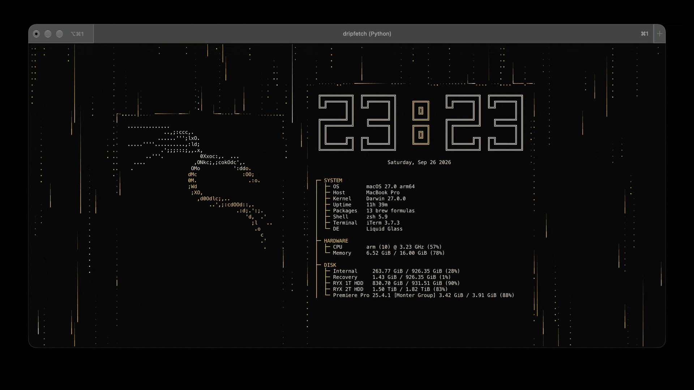
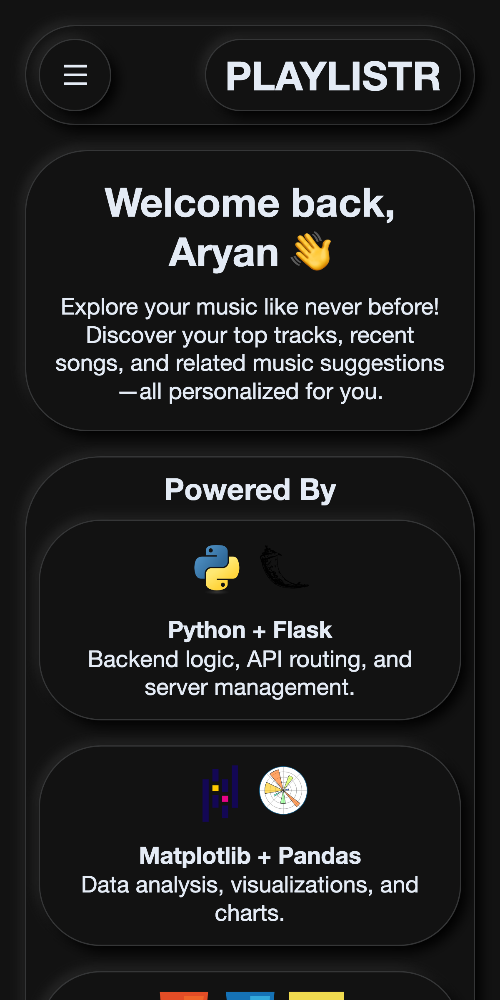

Terminal dashboardDripFetch
↗A customizable terminal dashboard with animated Matrix-style rain. Arrange system info, logos, clocks, calendars, weather, and network graphs with one YAML config.
View repository01/Frontend developer · Data engineer
Frontend developer by day and data engineer by night. I enjoy tuning numbers, from margins and padding to machine learning hyperparameters.
02/Selected work
Open-source projects that bring useful information to the terminal, turn data into something you can explore, and make everyday tools more personal.

Terminal dashboardA customizable terminal dashboard with animated Matrix-style rain. Arrange system info, logos, clocks, calendars, weather, and network graphs with one YAML config.
View repository Interactive world map
Interactive world map
An interactive world map for the terminal, with place names, live aircraft, weather, radar, earthquakes, and day/night bands.
View repository
Music dataA Spotify playlist app that turns a music library into smart playlists, listening stats, and visual stories about your listening habits.
View repositoryThe contribution chart is unavailable right now. Open GitHub ↗
03/Tools of the trade
From interface details to data pipelines, I like understanding how all the pieces fit together.
04/Courses & credentials
Selected course certificates from MFT. Open any scan to view it at full size.
05/A little background
I studied computer engineering and keep learning by building things that connect software, data, and the people using them.
06/The next thing
I’m open to thoughtful collaborations and new opportunities. Tell me what you’re working on.